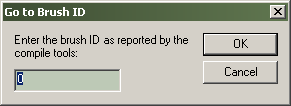

Dialogs: Go To Brush
When you've got an invalid brush in your map, compile tools will give you the brush id number of the brush that is bad.
For example:
Entity 0, Brush 4, Side 8: has a coplanar plane at (304, -384, 0), texture GENERIC99
To find the invalid brush in your map, you'd just bring up the Go To Brush dialog and enter 4 as the brush number, then press OK. The invalid brush will become selected and centered in the Views.
© 2004 Valve Corporation. All rights reserved. Valve, the Valve logo, Half-Life, the Half-Life logo, the Lambda logo, Steam, the Steam logo, Team Fortress, the Team Fortress logo, Opposing Force, Day of Defeat, the Day of Defeat logo, Counter-Strike, the Counter-Strike logo, Source, the Source logo, Hammer and Counter-Strike: Condition Zero are trademarks and/or registered trademarks of Valve Corporation. Microsoft and Visual Studio are trademarks and/or registered trademarks of Microsoft Corporation. All other trademarks are property of their respective owners.